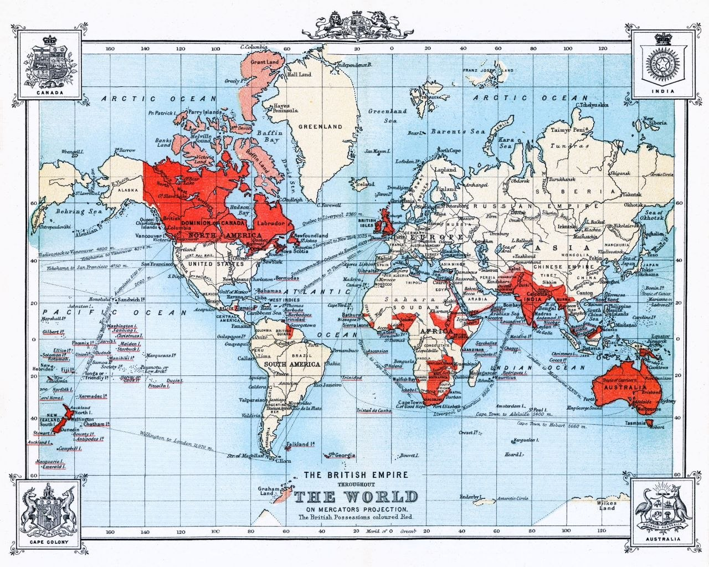

Британская империя остаётся крупнейшим государством за всю историю человечества. Пройдя путь от скромных торговых предприятий небольшой островной нации, она за три столетия трансформировалась в глобальную сверхдержаву, под властью которой находилась почти четверть всей земной суши и свыше 450 миллионов человек.
Знаменитая формула «Империя, над которой никогда не заходит солнце» была не просто поэтической метафорой, а строгим географическим фактом. Колоссальная протяженность территорий во всех часовых поясах гарантировала, что дневное светило непрерывно освещало хотя бы один из британских регионов — от заснеженных лесов Канады до тропических атоллов Океании.
Формирование империи проходило в два ключевых этапа. Первая империя (XVII–XVIII вв.) строилась на меркантилизме, трансатлантической торговле и колонизации Северной Америки. После утраты Тринадцати колоний в результате Американской революции вектор экспансии сместился на Восток. Наступила эпоха Второго имперского периода — века абсолютного военно-морского господства, промышленного превосходства и провозглашения Викторианского мира (Pax Britannica).